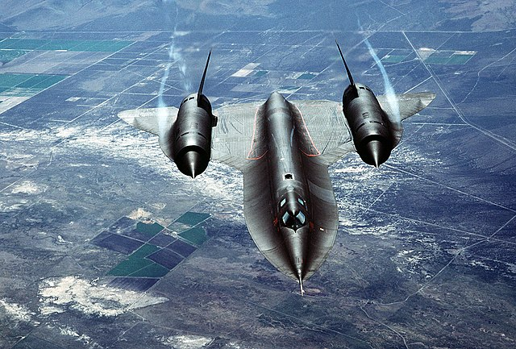

SR-71 Black Bird

The Sr-71 blackbird is a us spy plane that was used to take images of the USSR military sites. The SR-71 has a max speed of mach 3.2 being the fastest plane at its time the SR-17 is still the second fastest plane today with only the SR-72 Dark Star. the SR-71 was made in 1966. The SR-71 has no missiles and no countermeasures the only thing it has was speed. Once a Mig 25 shoot a air to air missile so the SR-71 when full after burners and was the only plane to outrun a missile.
Back